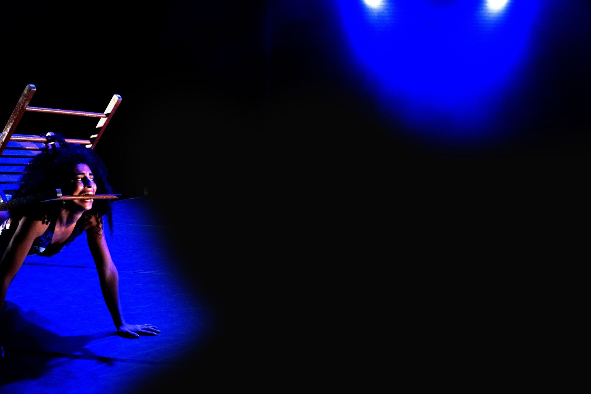
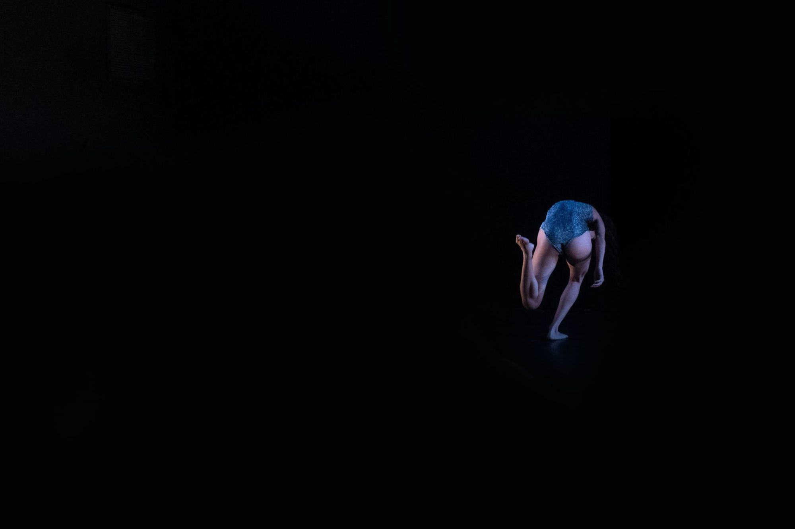
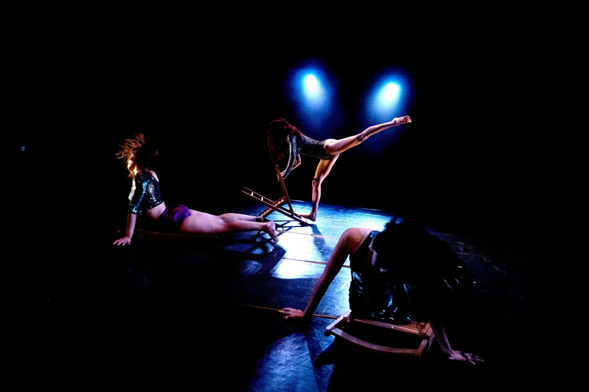
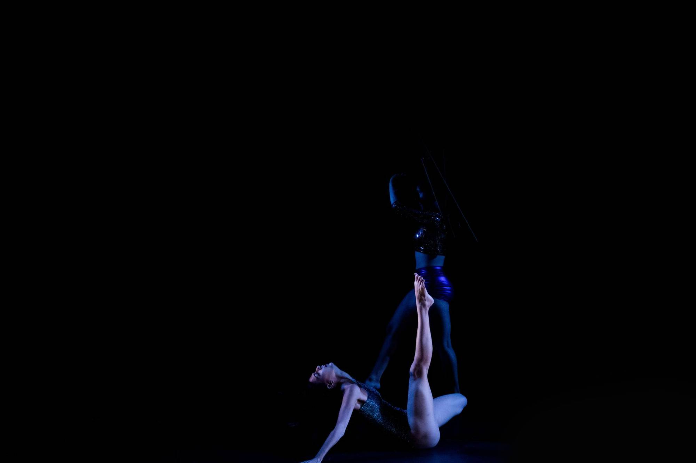
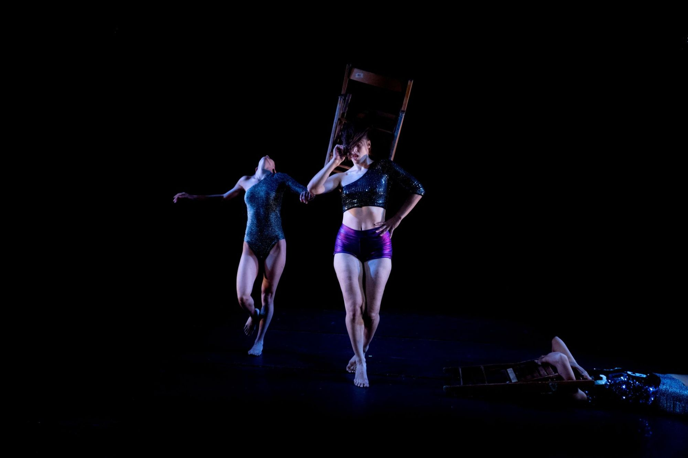

Stage · 2023
In Your Own Skin
Three women inside the shell of femininity — performing pop stardom, resisting it, and singing Britney until the voice breaks.

Teaser
Three women who have been performing on stage since they were born.
In a space where the shell of femininity is pushed to its limit, using vocal and body material from the pop world.
Feminine raw material — copied, but also created anew from their own bodies. Body dances Pop.
Sometimes fulfilling the need to be liked, sometimes wanting to get rid of it — finding a dancing body that isn't graceful.
Each body has a chair. Chair slams into a body, and together they slam into the floor.
The women sing Britney. Using her words in moments of togetherness, pleasure and strangulation.
Letting the words resonate as the voice breaks. Letting the body color the words with a different meaning each time.
Accepting the shell of femininity as a given state. Celebrating the possibility of performing inside it — becoming a pop star!
But also to be infuriated inside it. Angry at the pop, at feminine weakness, at the urge to satisfy and seduce.
Stills




Credits
Concept & choreography
Talia Barda
Dancers / creators
Avishag Rosenfeld, Sharon Karp & Talia Barda
Premiere
Acco Festival For Alternative Theatre, 2023
Artistic guidance
Or Marin
Video recording
Yarin Yosef
Teaser editing
Talia Barda
Light design
Matan Perminger
Photography
Dan Ben Ari